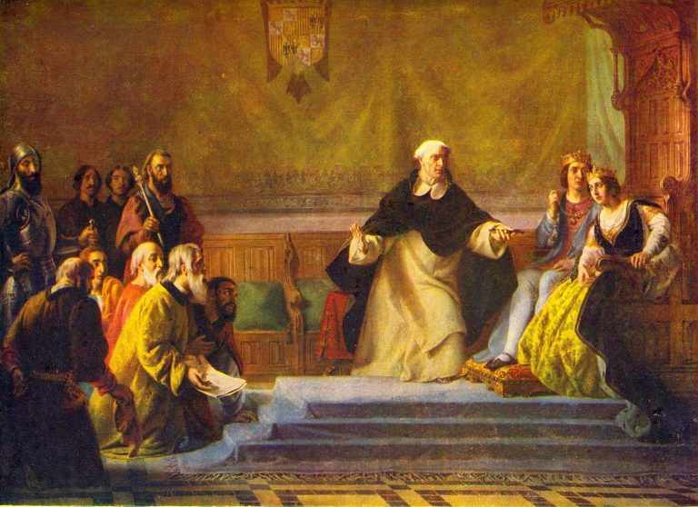

Na de uitzetting
Na de verdrijving van de joden uit Spanje en Portugal (1492–18e eeuw)

Na de verdrijving van de joden uit Spanje in 1492 en uit Portugal in 1497, bekeerde rijke Joodse handelaars, die de Inquisitie omschreef als Crypto-Joden, verspreid over heel Europa. Crypto-joden waren joden die gedwongen waren zich te bekeren Het christendom bleef echter in het geheim het jodendom praktiseren. Zij vestigden zich ook in de Zeventien provincies van de Lage Landen onder Spaans bewind. Het oude Zuiden provincies komen grofweg overeen met het huidige België, en de noordelijke provincies met het huidige Nederland. Nederland werd daarna een onafhankelijk land het Verdrag van Münster in 1648 en werd omgedoopt tot de Republiek der Zeven Verenigde Provinciën.
Terwijl Spaanse joden zich in de 16e eeuw in Nederland vestigden, waren zij en anderen hoogstwaarschijnlijk crypto-joden, vestigden zich ook in Antwerpen en Brugge. Aan het begin van de 16e eeuw speelden de in Antwerpen wonende crypto-joden een rol belangrijke rol in de economische en financiële zaken van de stad. Vanwege het Spaans Onder druk verlieten de meesten van hen Antwerpen rond 1540–1550, waarmee een einde kwam aan de tweede Jood immigratie in de regio.
Hoewel sommige crypto-joden in de 17e eeuw naar Antwerpen terugkeerden, konden ze dat niet langer dezelfde economische en financiële status genieten als een eeuw eerder. Van 1650 tot 1694 bestond er in Antwerpen een geheime synagoge, en enkele crypto-joodse dichters woonde in die tijd ook in Brussel.
Nadat Antwerpen in 1713 onder Oostenrijks bewind kwam, konden joden hun religie belijden opener. Ze kregen zelfs nog grotere vrijheid na de afkondiging van de “Edict van tolerantie”van Habsburgse keizer Jozef II in 1781.
Tijdens de 18e eeuw was er Joodse aanwezigheid in de zuidelijke provincies, onder Oostenrijks gezag heerschappij, bleef laag; In 1756 woonden ongeveer 100 joden – huisbewoners – in Brussel.
Referenties
- Schmidt, E. (1994). Geschiedenis van de Joden in Antwerpen. Antwerpen: Excelsior.
- Michman, D. (1998). België en de Holocaust: Joden, Belgen, Duitsers. Jeruzalem: Yad Vashem.
- Saerens, L. (2000). Vreemdelingen in een wereldstad: een geschiedenis van Antwerpen en zijn joodse bevolking (1880-1944). Tielt: Lannoo.
- Vromen, S. (2008). Verborgen kinderen van de Holocaust: Belgische nonnen en hun durf Redding van jonge joden uit de nazi's. Oxford Universiteitspers.